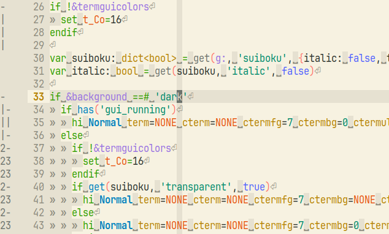
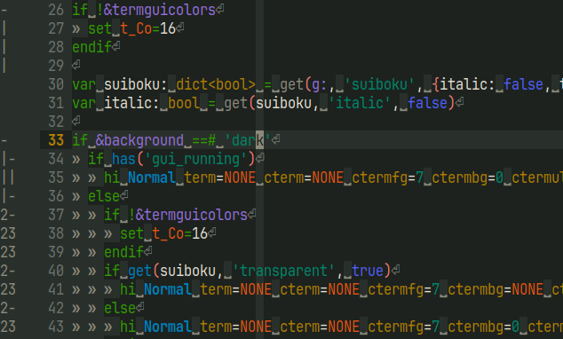

| name | HEX | color | term | APCA Lc | syntax | 和名 | ||
|---|---|---|---|---|---|---|---|---|
| light | dark | |||||||
| Inkstone | Inkstone | #1d221f | 0 | 95.3 | ― | dark background | 硯 | |
| Vermilion | Vermilion | #e44036 | 1 | 59.2 | -32.4 | 朱 | ||
| KOSHIABURA | KOSHIABURA | #309c00 | 2 | 54.9 | -36.7 | 漉油 | ||
| Ochre | Ochre | #c08000 | 3 | 52.4 | -32.4 | 黄土 | ||
| SEIRAN | SEIRAN | #2280e4 | 4 | 58.8 | -32.8 | 青藍 | ||
| Lotus | Lotus | #e14080 | 5 | 59.4 | -32.2 | 蓮 | ||
| Kingfisher | Kingfisher | #148fa4 | 6 | 57.4 | -34.2 | 川蝉 | ||
| Fog | Fog | #e6e1d1 | 7 | 7.5 | -86.3 | light sub background / dark foreground | 霧 | |
| AOZUMI | AOZUMI | #29302b | 8 | 92.2 | 0.0 | light foreground / dark sub background | 青墨 | |
| Peony | Peony | #ca5e5e | 9 | 58.8 | -32.8 | 牡丹 | ||
| Bamboo | Bamboo | #00886a | 10 | 62.4 | -29.2 | 竹 | ||
| Persimmon | Persimmon | #ca5b00 | 11 | 60.4 | -31.3 | 柿 | ||
| Ash | Ash | #6d736d | 12 | 65.9 | -25.7 | light sub foreground | 火山灰 | |
| Violet | Violet | #966fe1 | 13 | 58.3 | -33.3 | 菫 | ||
| Gray | Gray | #8c8a7d | 14 | 54.5 | -37.1 | dark sub foreground | 灰 | |
| WASHI | WASHI | #f7f2e1 | 15 | ― | -97.0 | light background | 和紙 | |
| name | Inkstone | Vermilion | KOSHIABURA | Ochre | SEIRAN | Lotus | Kingfisher | Fog | AOZUMI | Peony | Bamboo | Persimmon | Ash | Violet | Gray |
|---|---|---|---|---|---|---|---|---|---|---|---|---|---|---|---|
| Vermilion | 45.6 | ― | |||||||||||||
| KOSHIABURA | 44.9 | 69.7 | ― | ||||||||||||
| Ochre | 47.2 | 30.2 | 37.7 | ― | |||||||||||
| SEIRAN | 42.7 | 47.1 | 60.5 | 54.1 | ― | ||||||||||
| Lotus | 46.7 | 20.3 | 80.5 | 47.1 | 41.8 | ― | |||||||||
| Kingfisher | 36.2 | 55.7 | 47.4 | 48.2 | 13.3 | 56.6 | ― | ||||||||
| Fog | 76.9 | 41.4 | 35.7 | 32.1 | 44.1 | 43.6 | 39.5 | ― | |||||||
| AOZUMI | 4.55 | 44.3 | 41.2 | 44.2 | 40.6 | 45.8 | 33.2 | 67.8 | ― | ||||||
| Peony | 44.2 | 9.26 | 64.4 | 31.3 | 41.4 | 13.7 | 50.8 | 38.3 | 42.6 | ― | |||||
| Bamboo | 36.1 | 62.2 | 20.1 | 41.0 | 38.2 | 69.9 | 25.9 | 38.0 | 32.1 | 57.3 | ― | ||||
| Persimmon | 43.6 | 15.9 | 54.1 | 15.7 | 50.5 | 34.9 | 50.4 | 39.0 | 41.6 | 20.3 | 50.9 | ― | |||
| Ash | 27.3 | 33.8 | 27.5 | 29.4 | 29.7 | 35.1 | 20.9 | 33.4 | 23.2 | 30.9 | 20.3 | 30.9 | ― | ||
| Violet | 44.9 | 39.2 | 56.9 | 56.7 | 20.9 | 25.8 | 26.4 | 45.1 | 42.8 | 32.4 | 42.8 | 48.5 | 31.0 | ― | |
| Gray | 37.1 | 31.2 | 25.6 | 23.7 | 35.3 | 34.2 | 26.0 | 24.0 | 33.3 | 27.7 | 23.0 | 27.6 | 10.5 | 36.8 | ― |
| WASHI | 79.9 | 44.0 | 38.1 | 34.6 | 46.7 | 46.2 | 42.3 | 3.65 | 70.3 | 41.0 | 40.7 | 41.6 | 36.7 | 47.6 | 27.5 |